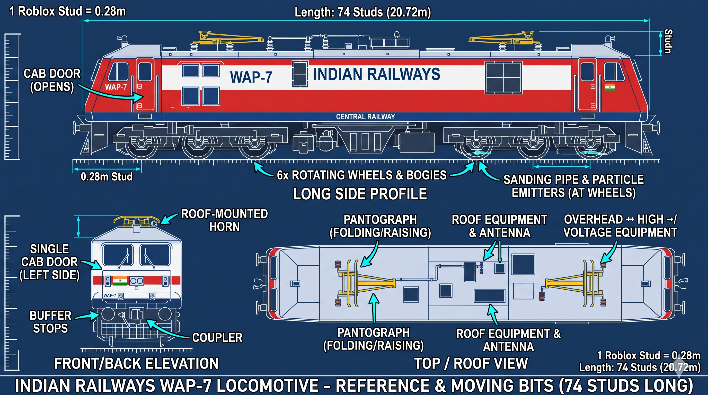
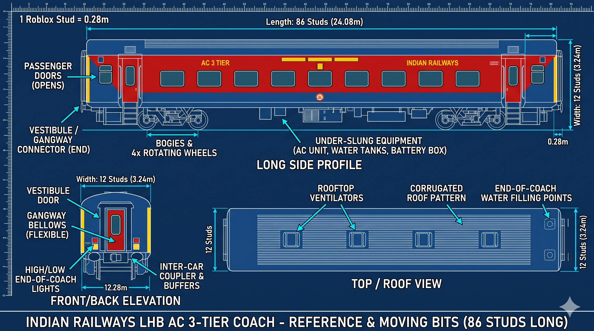

Bumbai Train Sim · Build reference
One HTML file · edit sections here as the plan changes
Current build target
Central Junction
A clean, expandable Indian railway-inspired simulator plan. Fictional station branding, scale-conscious rolling stock, and a nearby train depot.
15 platforms8 m wide · Platform 1 is the long express platform
Project overview
Use this page as the living build reference. Keep the first playable area simple, readable, and easy to expand.
Build order: tracks and clearance → platforms → station structures → static train scale check → simple driving.
Choose a section above. The station, locomotive, coaches, and single-unit trainsets now have separate views instead of one long page.
Stations
Central Junction is the main terminus and player spawn. Start with its track/platform geometry, then dress it as a busy Indian railway station.

Central Junction dimensions
| Platform | Width | Width studs | Length | Length studs |
|---|---|---|---|---|
| 1 | 8 m | 29 | 620 m | 2,220 |
| 2 | 8 m | 29 | 600 m | 2,150 |
| 3 | 8 m | 29 | 580 m | 2,080 |
| 4 | 8 m | 29 | 560 m | 2,000 |
| 5 | 8 m | 29 | 540 m | 1,930 |
| 6 | 8 m | 29 | 520 m | 1,860 |
| 7 | 8 m | 29 | 500 m | 1,790 |
| 8 | 8 m | 29 | 480 m | 1,720 |
| 9 | 8 m | 29 | 460 m | 1,650 |
| 10 | 8 m | 29 | 440 m | 1,580 |
| 11 | 8 m | 29 | 420 m | 1,500 |
| 12 | 8 m | 29 | 400 m | 1,430 |
| 13 | 8 m | 29 | 380 m | 1,360 |
| 14 | 8 m | 29 | 360 m | 1,290 |
| 15 | 8 m | 29 | 340 m | 1,220 |
Lengths taper toward Platform 15; the shorter platforms suit shorter trains. Conversion: 1 stud ≈ 0.28 m, lengths rounded upward to a convenient 10 studs. These are game-build targets.
Station look and track rules
- Use a proper entrance/concourse, steel platform roofs, ticket area, stalls, benches, lighting, waiting hall, and AC waiting hall.
- Keep the platform raised and grounded beside the tracks, with a safety strip and enough coach clearance.
- Use visible rectangular raised rails, cross sleepers, and ballast. Keep grass off the rail corridor.
- Add overhead electric masts, gantries, and wires; check clearance against the locomotive pantograph and coach roof.
- Put platform number boards where passengers can read them, facing across the tracks rather than running parallel.
- Close the terminus end with a visible buffer stop. Confirm the exact 15-platform track order in a top-down sketch before building the full station.
Trains
Reference models are split by rolling-stock type. Each uploaded picture opens the original file in the repository when clicked.
WAP-7 locomotive

Reference dimensions: Central Railway WAP-7 technical data.
LHB AC 3-tier passenger coach

Platform 1 rake check
WAP-7 + 22 AC 3-tier coaches is about 548.6 m overall. Allow about 20 m for stopping margin; Platform 1 is planned at 620 m. If two EOG power cars are added, add about 48 m and recheck the stopping margin.
Reference dimensions: South Central Railway LHB coach data.
Single-unit trainsets
These trains are designed as connected trainsets rather than a separate locomotive hauling loose coaches. Add a model and dimensions here when you choose the exact reference.
Images pending: the repository currently has WAP7.png, LHB3RDAC.png, and platformblueprint.png. Add Vande Bharat or EMU images to the image folder and link them in this section.
Nearby train depot
A small train stabling yard, the in-game train garage, roughly 1 km from Central Junction by track route.
- Several parallel sidings for storing and spawning trains.
- Simple inspection shed and service walkway.
- One lead track connects the depot to the station approach.
- Keep the depot separate from passenger platforms; label it Central Junction Train Depot.
How the player uses it
Keep the first control flow obvious and short.
- Spawn: near the station entrance or a marked platform access point.
- Board: one prompt to enter the locomotive cab or inspect the parked train.
- Drive: simple throttle, brake, direction, and speed display.
- Travel: drive between the nearby train depot and Central Junction on the connected track.
Later ideas
Reserve space for these, then add them after the station and first train trip work.